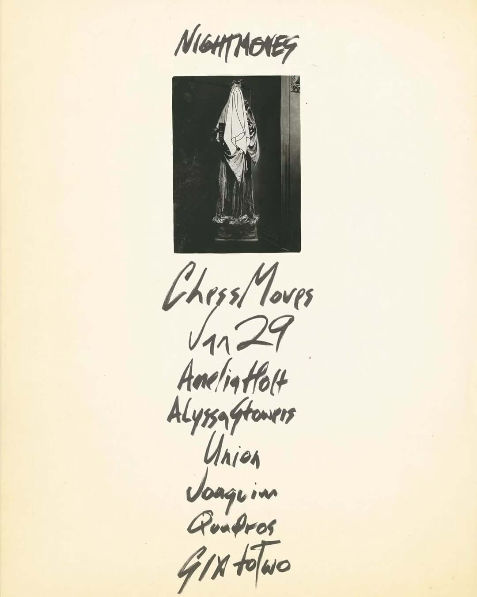
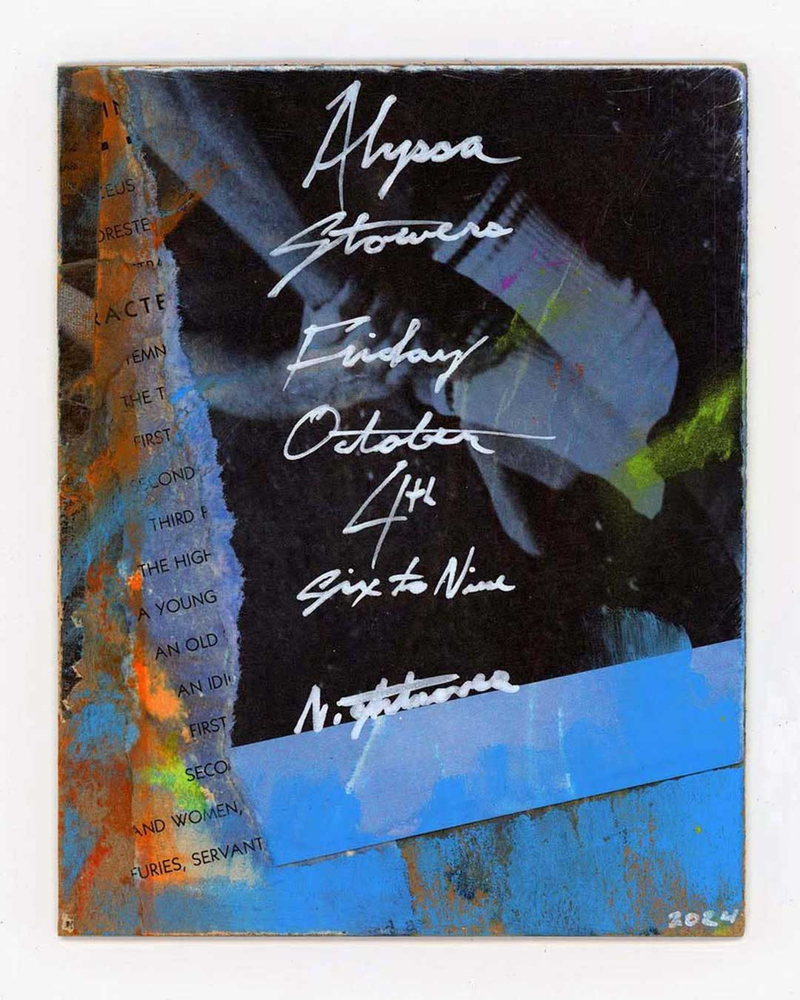

Archive of past sets and mixes
Next radio show: Sunday, January 18th



As an occasional DJ, Alyssa takes time between sets to carefully collect and curate music tailored to each setting. She is also currently a resident on The Lot Radio, where her show Selective Listening explores a different thematic focus for each month. You can listen to past mixes and shows on thelotradio.com or onSoundCloud.